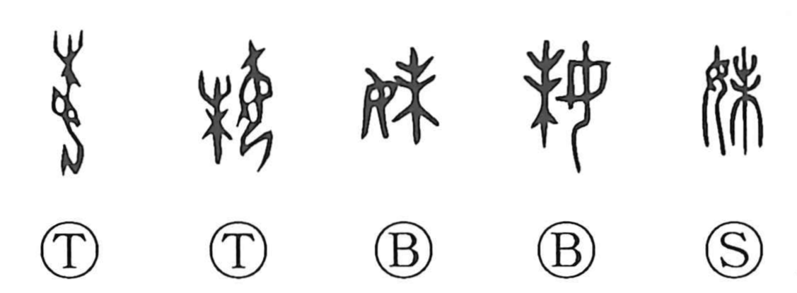

妹

Kun: imouto | On: mai
younger sister
Explanation
妹 is a phonetic–semantic character: 女 (woman) supplies the meaning field, while 未 contributes the sound, yielding the on-yomi mai. The Shuowen glosses it as “female younger brother,” that is, a younger sister, and sets it in contrast to 姉, “female elder brother,” for an elder sister. The graph was also borrowed to write 昧 (“dark”), a usage visible in bronze inscriptions where 妹辰 stands for the dim light of dawn.